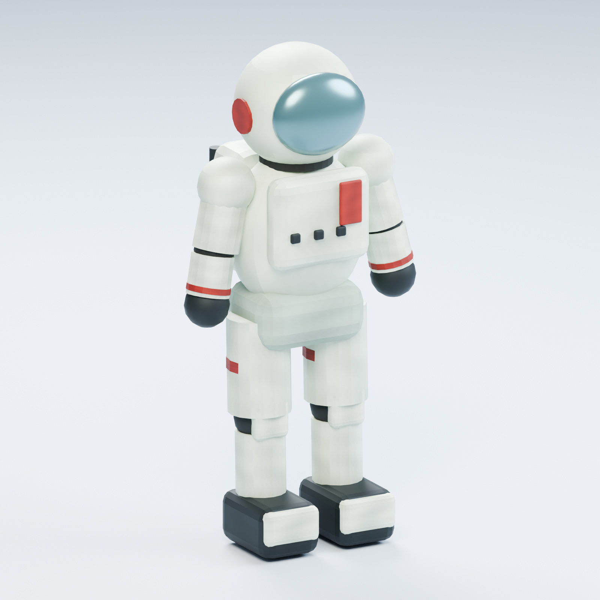
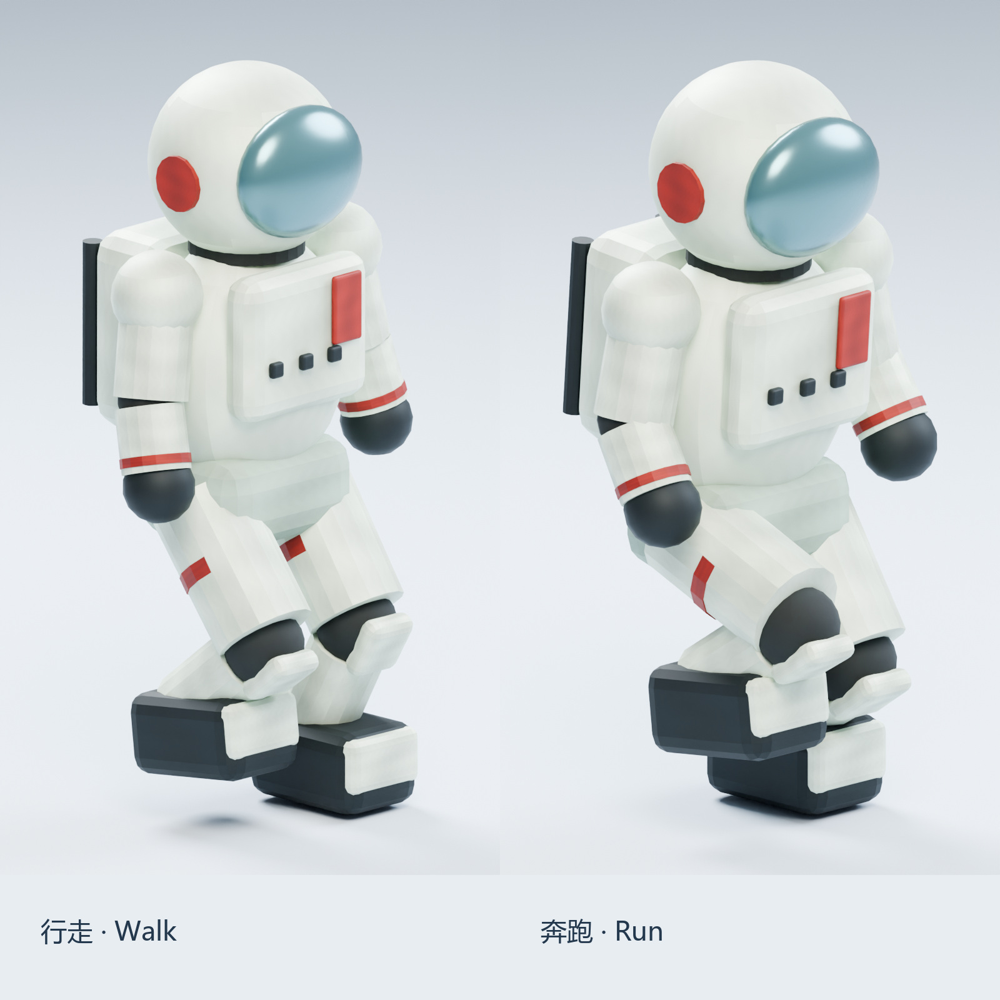
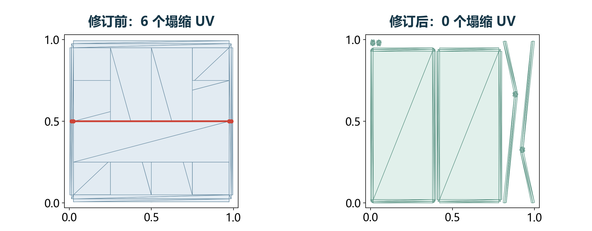
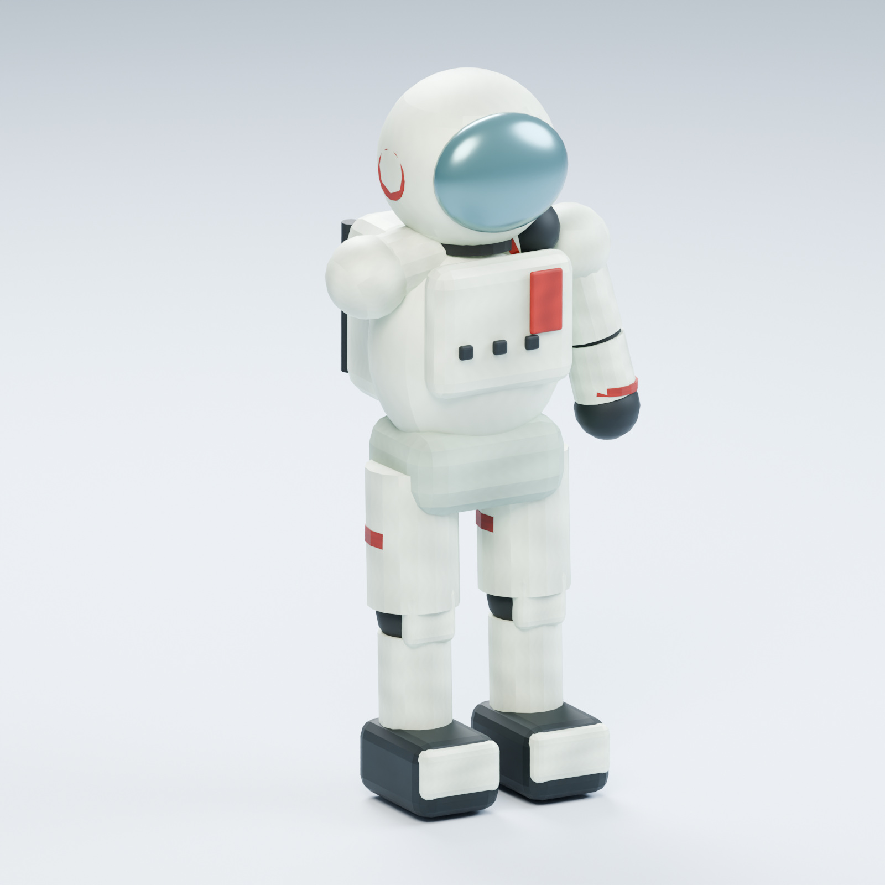
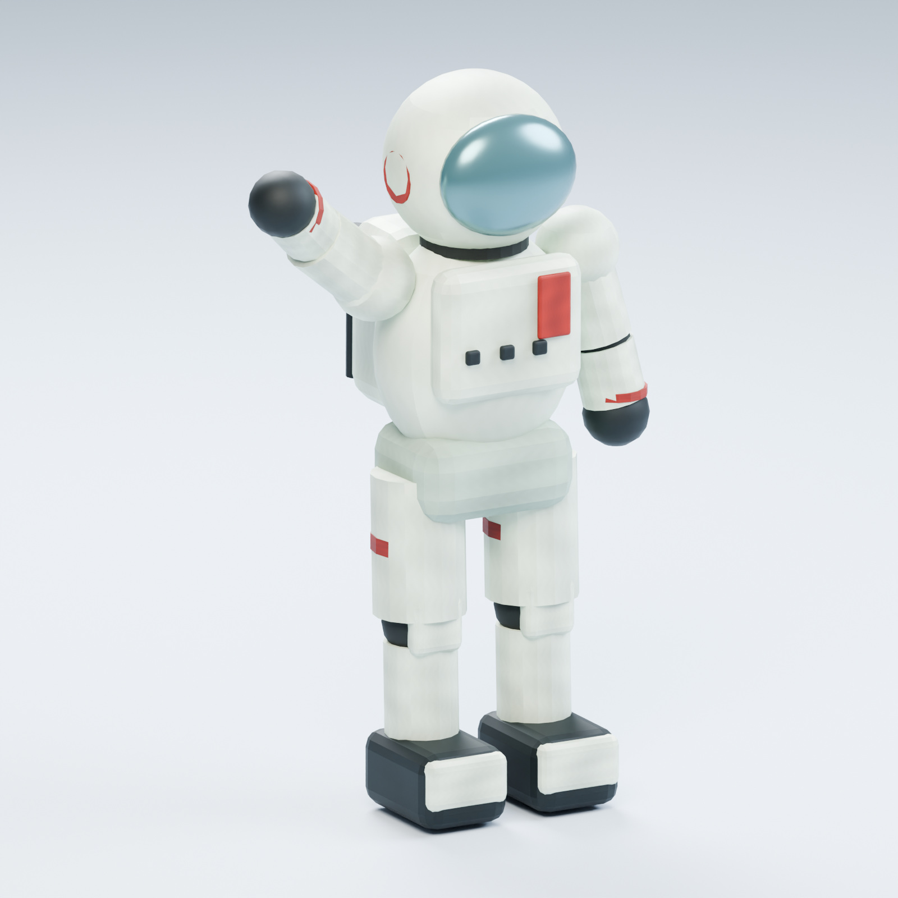

TapTap 2026 聚光灯 21 天游戏创作挑战 · 团队作品
织光之野三维资产与游戏内呈现
主要承担角色及代表道具的三维资产制作、迭代与质量检查；围绕玩法检查比例、材质、动作与交互结构，并承担交互开发、Windows 构建及实机检查。
游戏里的实际效果
角色、设备与环境共同服务探索和交互。

我的制作与交付工作
主要承担角色和代表设备的造型、材质与迭代，结合游戏视角复查轮廓、比例和辨识度；检查角色动作与部件连接，处理模型、UV 与显示问题。资产接入后继续核对交互表现、版本构建与运行结果。
角色与代表道具
原游戏资产的展示与细节修订，观察结构、材质和动作。


让角色适应实际操作
角色具有 20 根骨骼、13 个动作。围绕待机、行走、奔跑、检查、交互与携带等行为复看连接与姿态，并在关键帧检查肩肘、手部及躯干之间的关系。展示副本进一步调整头侧标识的位置和腕带的轴向贴合，修顺局部穿插与轮廓。
道具按结构功能分件，在统一的材质语言下区分外壳、接触面、金属紧固件和操作部位；结合尺度、面数、LOD 与游戏内距离检查显示效果。
从问题定位到修订复验
针对项目资产，在独立副本中完成技术检查与修订。

清理退化几何，重新展开 UV
前面板与检修盖共发现 9 个塌缩 UV 三角形。合并近重合点、清理退化边并重新展开后，塌缩 UV 降为 0；两部件各由 188 降为 156 个三角形，开放边为 0，共享边绕向一致。
将几何检查与贴图的实际可见影响结合，确定修订位置和处理优先级。
挥手动作的肩臂关系


针对 Wave 挥手动作修正右上臂的旋转方向。第 13 帧的指定部件相交边由 243 降至 0；对第 1–59 帧按半帧间隔检查 117 个姿态，修订后右前臂及手部与胸、颈、头之间的相交边均为 0。结合 5 个关键帧复看动作，保留其余 12 个动作、网格、UV 和权重。
继续查看个人资产制作
完整角色、环境资产和可操作的采集交付场景。